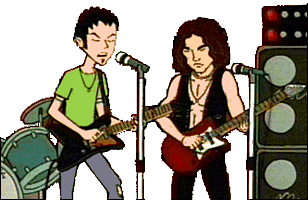
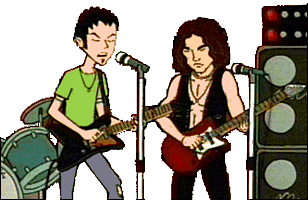

Episode Guide
Cover Songs

Episode Guide
Cover Songs

|
A "cover" is the recording industry term for a song performed by an artist that was originally performed by another artist years ago. Some recent examples include "Because the Night" by Patty Smith (covered by 10,000 Maniacs) and "Love Rollercoaster" by the Ohio Players (covered by the Red Hot Chili Peppers for the Beavis and Butt-head Do America soundtrack). Covers do not include songs that use a tune or a sample from a song with different lyrics (examples of this include "U Can't Touch This" by M.C. Hammer, based on Rick James' "Super Freak," and "Come With Me" by Puff Daddy, based on Led Zeppelin's "Kashmir"). |
| Song | Cover Artist | Original Artist | Episode |
|---|---|---|---|
| All By Myself | Celine Dion | Eric Carmen | Pinch Sitter |
| Close to You | Ethyl Meatplow | The Carpenters | Pierce Me |
| Hush | Kula Shaker | Deep Purple | The Daria Hunter |
| I Shot the Sheriff | Warren G | Bob Marley | The Big House |
| I'm Your Boogie Man | White Zombie | KC & The Sunshine Band | Pierce Me |
| The Saint | Orbital | The Les Reed Brass | Pinch Sitter |
| Sharp Dressed Man | 8½ Souvenirs | ZZ Top | Life in the Past Lane |
| Tainted Love | Soft Cell | Gloria Jones | Legends of the Mall |
| Wishin' & Hopin' | Ani DiFranco | Dusty Springfield | I Don't |
| You Showed Me | The Lightning Seeds | The Turtles | Road Worrier |
Note: Initial airings of "I Don't" used the Ani DiFranco cover of "Wishin' & Hopin'." At some point, however, it was replaced with a version of the Dusty Springfield rendition (for reasons unknown) and remains that way to this day. | |||